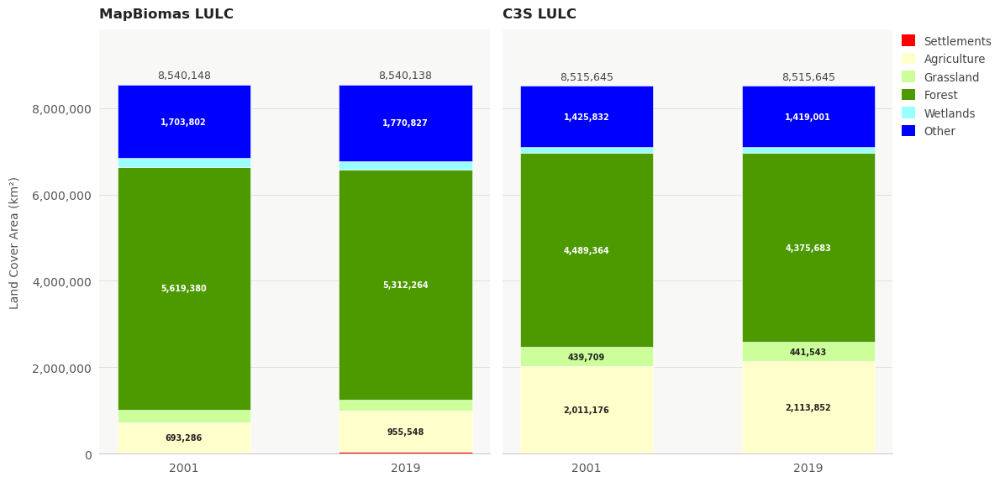
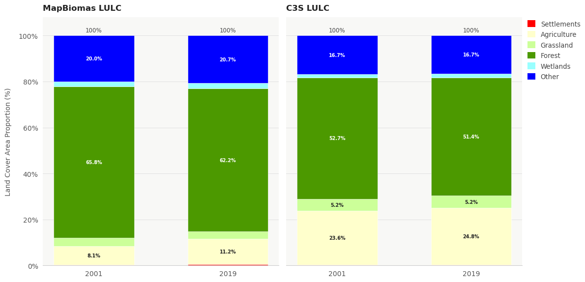
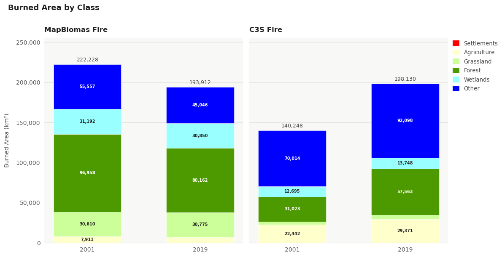
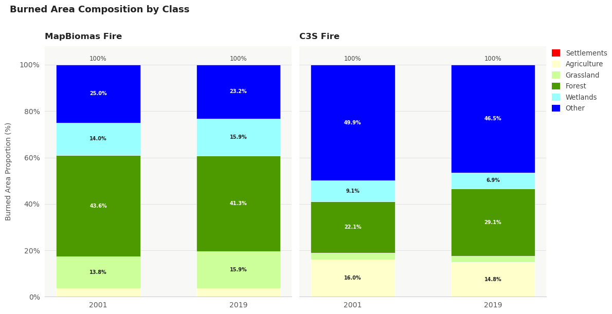

1.4.1. Satellite Land Cover consistency for Fire Management#
Production date: 13-05-2026
Produced by: Inês Girão e Luís Figueiredo (+ATLANTIC)
🌍 Use case: Characterising land cover in fire-burned areas#
❓ Quality assessment question#
How consistent are C3S Land Cover classes in burned areas when compared with independent burned-area and land-cover datasets?
Understanding how different datasets represent land cover within burned areas is essential for ensuring the reliability of fire impact assessments and downstream applications such as ecosystem monitoring and carbon accounting. Both land cover (LC) and burned area (BA) are recognized as Essential Climate Variables (ECVs), but differences in their derivation can lead to inconsistencies when they are analysed together.
In this notebook, we use three complementary datasets distributed via the Copernicus Climate Change Service (C3S) and by MapBiomas :
The Land Cover Classification Gridded Maps from 1992 to present derived from satellite observations (hereafter referred to as C3S LC). These maps, produced at 300 m spatial resolution, describe annual land cover states and transitions across 22 global classes, following the FAO/UN Land Cover Classification System. The dataset ensures temporal consistency by integrating multiple Earth observation missions, including AVHRR, SPOT-VGT, PROBA-V, and Sentinel-3 OLCI/SLSTR, and is designed to support climate modelling and environmental monitoring.
The Fire burned area from 2001 to present derived from satellite observations (hereafter referred to as C3S Fire),provides global burned area information. The product is based on MODIS surface reflectance and active fire detections and offers both pixel-level maps (250 m spatial resolution) with attributes such as date of the first detection, confidence level and land cover burned pixels and gridded products (0.25° resolution) with attributes such as burned area, standard error, fraction of obseserved and burnable area, number of patches and sum of burned area for each land cover category.
The MapBiomas Land Cover dataset, hereafter referred to as MapBiomas LC, and the MapBiomas Burned Area dataset, hereafter referred to as MapBiomas Fire, provide annual information on multiple variables, including land cover, land use and burned areas. Both products are generated primarily from Landsat imagery at 30 m spatial resolution through automated classification workflows supported by satellite mosaics, temporal analysis, machine-learning algorithms, region-specific rules, expert review and post-processing to improve spatial and temporal consistency. Together, they enable the assessment of long-term land-cover transitions, including deforestation, agricultural expansion, vegetation recovery and urban growth, as well as the characterisation of the vegetation types or land-use systems affected by fire.
This analysis focuses on evaluating the consistency of land cover information within burned areas across datasets. Specifically, we assess whether the land cover classes assigned to burned pixels in the Fire dataset are coherent with those reported in the MapBiomas Fire products.
📢 Quality assessment statement#
These are the key outcomes of this assessment
After harmonisation to IPCC land categories, C3S and MapBiomas show broadly consistent total land-cover composition over Brazil. Both products identify
Forestas the dominant class, followed byOtherandAgriculture.The main differences in total land-cover composition are in the relative allocation of area between
Forest,AgricultureandOther. MapBiomas assigns a larger share toForest, while C3S assigns a larger share toAgriculture.Land-cover composition within burned areas shows stronger product differences than total land-cover composition. This means that agreement at the full-area level does not automatically translate into the same class distribution when the analysis is restricted to burned pixels.
Despite these differences, both products show a coherent high-level pattern: burned areas are mainly associated with vegetation-related IPCC classes.
A key quality finding is that cross-product agreement improves in the more recent year analysed. Burned-area totals differ strongly in 2001 but are much closer in 2019, suggesting greater consistency for recent burned-area land-cover assessment.
The
OtherIPCC class remains the main interpretation caveat because it aggregates heterogeneous land-cover types. Differences involvingOthershould therefore be interpreted cautiously.Overall, the results support the use of C3S Land Cover as a broad IPCC-level land-cover context for burned-area analysis, particularly in recent years. The comparison is not intended as detailed subclass validation.
📋 Methodology#
1. Download and Data Harmonisation
3. Land Cover Classes harmonisation into a common classification
4. Identification of Burned Areas and associated Land Cover classes
📈 Analysis and results#
1. Download and Data Harmonisation#
Before we begin we must prepare our environment. This includes installing the Application Programming Interface (API) of the CDS, and importing the various python libraries that we will need.
At the end of the data request form on CDS, select Show API request to generate Python code, which can be pasted directly into a Jupyter Notebook cell. Running this cell will retrieve the requested files, provided that you have accepted the dataset’s terms and conditions on the CDS platform. It is advisable to define the desired time period and Area of Interest (AoI) explicitly when preparing the API request, as shown in the example cells below.
Import all the libraries/packages#
We will be working with data in NetCDF format. To best handle this type of data we will use libraries for working with multidimensional arrays, in particular Xarray. We will also need libraries for plotting and viewing data.
Data download#
For illustration, we focus on the first and last selected years common to all datasets used in this example (2001 and 2019).
Download request for C3S LC dataset#
Download for C3S LC dataset#
Download MapBiomas LC dataset#
Here we convert the ds_lc dataset that is indexed by a time coordinate into one indexed by year: it first adds a new coordinate year by extracting the calendar year from each timestamp in time, then replaces the time dimension with year across all variables and drops the original time variable. Use this when you have exactly one observation per year; if you have multiple timestamps within the same year (e.g., monthly or daily data), you should aggregate to unique years first (e.g., groupby("time.year").mode() for categorical variables), otherwise swapping dimensions will fail due to duplicate year labels and you’ll lose sub-annual resolution.
Label Color Definition and Class Correspondence for Land Cover dataset#
To facilitate visual inspection of the Land Cover (LC) classes, we define a dictionary containing each class label (the “keys”), the corresponding color code (the “colors”), and the associated numeric identifier (the “values”). In addition, we create a second dictionary to establish the correspondence between the original land cover classes provided in the metadata and the aggregated IPCC classes, as described in the Product User Guide (see resources).
Download request for C3S Fire dataset#
Download C3S Fire dataset#
Download MapBiomas Fire dataset#
The following code cleans up the temporal dimension of the ds_fire dataset so that it has a consistent monthly index. It starts by creating a canonical month label using the start date from each time_bounds interval, ensuring that every timestamp is aligned to the first day of its month. It then removes duplicates by grouping on this new monthly label and keeping a single record per month (you can change the reducer—e.g. mean, sum, max—if you want a different way of combining duplicates). After that, it reindexes the dataset onto a continuous monthly timeline (freq="MS") from the first to the last available month, inserting NaNs where months are missing so that the gaps remain visible in analysis and plots. Finally, it adds simple integer year and month coordinates, making it easier to filter, group, or aggregate by calendar units.
2. Study Area#
For this study the Brazil boudaries were selected according to the delimitation proposed by Eva & Ober (2005).
Clip datasets to Brazil boundaries#
3. Land Cover Classes harmonisation into a common classification#
To enable comparison between products, thematic harmonisation was required. The C3S LC product uses the Land Cover Classification System (LCCS) legend, while MapBiomas uses its own Collection 10 class legend. These class systems are not directly equivalent.
For this notebook, the harmonisation follows the correspondence provided in the C3S Land Cover Product User Guide and Specification, 2024 between the IPCC land categories used for change detection and the LCCS classes used in the C3S Land Cover product.
The original C3S and MapBiomas class codes are reclassified into the following common IPCC land categories:
MapBiomas IPCC correspondence
IPCC class |
MapBiomas codes |
Class description |
|---|---|---|
Forest |
3, 4, 5, 6, 9, 49 |
Forest Formation, Savanna Formation, Mangrove, Floodable Forest, Wooded Sandbank Vegetation, Forest Plantation / Silviculture |
Agriculture |
18, 19, 39, 20, 40, 62, 41, 36, 46, 47, 35, 48, 21 |
Agriculture, temporary crops, soybean, sugar cane, rice, cotton, other temporary crops, perennial crops, coffee, citrus, palm oil, other perennial crops, mosaic of uses |
Grassland |
12 |
Grassland |
Wetlands |
11, 32 |
Wetland, Hypersaline Tidal Flat |
Settlements |
24 |
Urban Area |
Other |
23, 25, 30, 75, 29, 31, 33, 50, 15 |
Beach/Dune/Sand, Other Non-Vegetated Areas, Mining, Photovoltaic Power Plant, Rocky Outcrop, Aquaculture, River/Lake/Ocean, Herbaceous Sandbank Vegetation, Pasture |
No data |
27 |
Not Observed |
C3S LC IPCC correspondence
IPCC class |
C3S/CCI LC codes |
Class description |
|---|---|---|
Forest |
50, 60, 61, 62, 70, 71, 72, 80, 81, 82, 90, 100, 160, 170 |
Tree cover classes, mixed tree cover, mosaic tree/shrub with herbaceous cover, and flooded tree-cover classes |
Agriculture |
10, 11, 12, 20, 30, 40 |
Rainfed cropland, irrigated/post-flooding cropland, and cropland/natural vegetation mosaics |
Grassland |
110, 130 |
Mosaic herbaceous cover with tree/shrub cover and grassland |
Wetlands |
180 |
Flooded shrub or herbaceous cover |
Settlements |
190 |
Urban areas |
Other |
120, 121, 122, 140, 150, 151, 152, 153, 200, 201, 202, 210 |
Shrubland, lichens and mosses, sparse vegetation, bare areas, consolidated/unconsolidated bare areas, and water bodies |
No data |
0 |
No data / invalid / not classified |
Interpretation note
The burned-area layer is used to identify the subset of pixels affected by fire. The analysis then compares the IPCC land-cover composition of the full area with the IPCC land-cover composition inside burned areas.
This means that the notebook evaluates land-cover composition and land-cover composition within burned areas, rather than validating the burned-area product itself.
4. Identification of Burned Areas and associated Land Cover classes#
Function to calculate burned land cover classes area for the C3S Fire dataset#
Function to calculate burned land cover classes area for the MapBiomas Fire dataset#
Function to calculate the LULC Area for the C3S LULC dataset#
Function to calculate the LULC Area for the MapBiomas LULC dataset#
Calculate Area#
Calculate area by land cover classes
Calculate fired burned area by land cover classes
5. Results#


Analysis of total land-cover composition#
The total land-cover area plots compare the distribution of IPCC land categories across Brazil for C3S LC and MapBiomas LC in 2001 and 2019.
Both products show that Forest is the dominant land-cover class in Brazil in both years. However, the relative proportion of forest differs between products. MapBiomas estimates a larger forest share, decreasing from approximately 65.8% in 2001 to 62.2% in 2019. C3S estimates a lower forest share, decreasing from approximately 52.7% in 2001 to 51.4% in 2019.
The difference between the products is also visible in the Agriculture class. C3S assigns a substantially larger proportion of the country to Agriculture, increasing from approximately 23.6% in 2001 to 24.8% in 2019. MapBiomas shows a lower Agriculture share, increasing from approximately 8.1% in 2001 to 11.2% in 2019.
These differences are expected because the two products use different input data, spatial resolutions, classification systems, and class definitions.
Despite these differences, both products show a consistent broad pattern between 2001 and 2019:
Forest remains the dominant class.
Agriculture increases over time.
Forest area decreases over time.


Analysis of land-cover composition within burned areas#
The burned-area land-cover plots show the IPCC land-cover composition of pixels identified as burned. In this analysis, the burned-area layer is used as a spatial mask, and the land-cover classes are then summarized only within that burned-pixel subset.
The distribution within burned areas differs from the total land-cover distribution. In both MapBiomas and C3S, burned pixels are concentrated in vegetation-related IPCC classes rather than in Settlements or No data. This indicates that both products provide a plausible broad land-cover context for burned-area analysis.
For MapBiomas, Forest is the largest burned-area class in both years, accounting for approximately 43.6% of burned area in 2001 and 41.3% in 2019. Other, Wetlands, and Grassland also contribute substantially, indicating that burned areas are distributed across several natural or semi-natural vegetation categories.
For C3S, the burned-area composition is different. The dominant class is Other, accounting for approximately 49.9% of burned area in 2001 and 46.5% in 2019. Forest is lower than in MapBiomas but increases from approximately 22.1% in 2001 to 29.1% in 2019. Agriculture also contributes a notable share, representing approximately 16.0% in 2001 and 14.8% in 2019.
The total burned area also differs between the two product families. MapBiomas decreases from approximately 222,228 km² in 2001 to 193,912 km² in 2019, while C3S increases from approximately 140,248 km² to 198,130 km². As a result, the total burned-area estimates are much closer in 2019 than in 2001.
The strongest difference in class composition concerns the balance between Forest and Other. This is important because Other is a heterogeneous category that may include shrubland, sparse vegetation, bare areas, water-related classes, and product-specific classes depending on the source product. Results involving Other should therefore be interpreted cautiously.
Overall, the burned-area plots show that both products identify burned areas mainly within vegetation-related IPCC classes, supporting the broad plausibility of the comparison. However, the relative allocation of burned pixels across Forest, Other, Agriculture, Grassland, and Wetlands differs between products.
6. Main takeaways#
IPCC harmonisation makes the C3S and MapBiomas products thematically comparable by grouping their original land-cover legends into the same broad reporting classes.
For total land-cover composition, C3S and MapBiomas are broadly consistent after IPCC aggregation. Both products identify
Forestas the dominant class, followed byOtherandAgriculture.The main differences in total land-cover composition are in the balance between
Forest,AgricultureandOther. MapBiomas assigns a larger proportion of the study area toForest, while C3S assigns a larger proportion toAgriculture.Differences become more pronounced when the analysis is restricted to land cover within burned areas.
Both products consistently show that burned areas are mainly associated with vegetation-related IPCC categories, supporting the broad plausibility of the C3S land-cover context for burned-area analysis.
Cross-product agreement is better in 2019 than in 2001, especially for the total burned area. This suggests that recent-year burned-area land-cover assessments are more robust than early-period comparisons.
The
Otherclass should be interpreted cautiously because it aggregates several heterogeneous land-cover types, including shrubland, sparse vegetation, bare areas, water-related classes and product-specific categories.
ℹ️ If you want to know more#
Key resources#
Some key resources and further reading were linked throughout this assessment.
The CDS catalogue entry for the data used were:
Land cover classification gridded maps from 1992 to present derived from satellite observations: (https://cds.climate.copernicus.eu/datasets/satellite-land-cover?tab=overview)
Product User Guide and Specification of the dataset version 2.1 and version 2.0
Fire burned area from 2001 to present derived from satellite observations: (https://cds.climate.copernicus.eu/datasets/satellite-fire-burned-area?tab=overview)
Product User Guide and Specification of the dataset version 5.0
Additional resources:
Code libraries used:
C3S EQC custom functions,
c3s_eqc_automatic_quality_control, prepared by B-Open